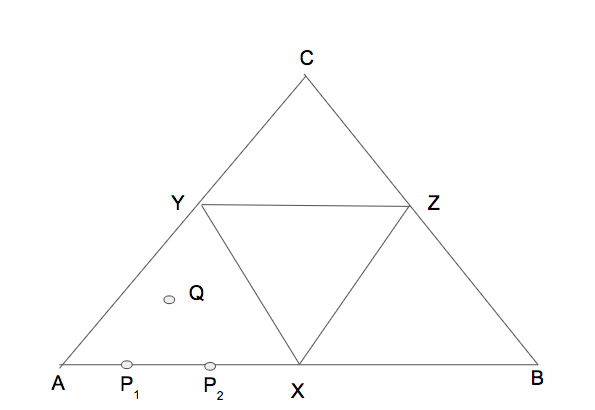
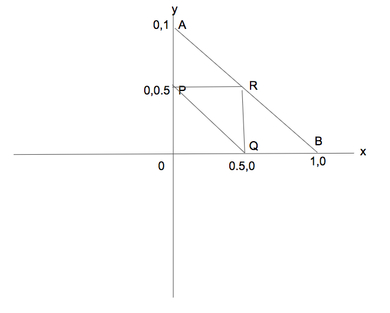

I recently came across the following question: if you randomly partition a line segment in three segments, what is the probability that the three segments will be the sides of a triangle?
After some false starts and incorrect calculations, I was able to solve it.
Assume the length of triangle to be unit. Clearly, the segments will be parts of a triangle if each of them is less than 0.5.
Let P1 be the point on the left. Probability that is it is smaller than 0.5 is 0.5.
Now assume that |AP1| = s. Now the next point P2 should be of length at least 0.5 - s (else |P2B| will be more than 0.5) and at most 0.5. Further, it should like to the right of P1. Probability of that happening is s.
So probability of choosing P1 and P2 such that P1 is to the left and triangle inequality happens is: $$\int_0^{1/2} {(1/2)}s ds = 1/8$$
But then, we could also have P2 on left and P1 on right, bringing the probability to 1/4.
But then I saw another, geometric solution in a youtube video
For each pair of points P1 and P2 on AB, there is a point Q inside the big triangle such that P1P2Q is an equilateral triangle. Similarly for each point inside the big triangle, there is a pair of points on the line AB.
P1 and P2 divide the line AB in such a way that the segments can form equilateral triangle if and only if Q lies inside the smaller triangle XYZ. Since area of triangle XYZ is one fourth of the area of triangle ABC, the answer of the original question is 1/4.
A side noteThis method is simply "de-calculusazing" method 1.
Since lengths of first two segments determine the length of the third segment, we consider the possible values of the lengths of first two segments. Plot all points (x, y) on the 2D coordinate system where x and y are the lengths of the two segments. The constraint that these points need to satify is x + y <= 1 Clearly, those points consititute the triangle AOB.
Now consider those points (x, y) such that x, y, 1 - x - y are the sides of a triangle. For this to happen, x, y need to be less than 0.5 and x + y needs to be more than 0.5. Triangle PQR represents the set of such points.
Since area of triangle PQR is 1/4 of the area of triangle AOB, we have our answer as 1/4
Is there some deeper connection between the first/third and second solutions? Is there yet another way to solve this problem? If you have any thoughts, let me know at vivek@qgraph.io.